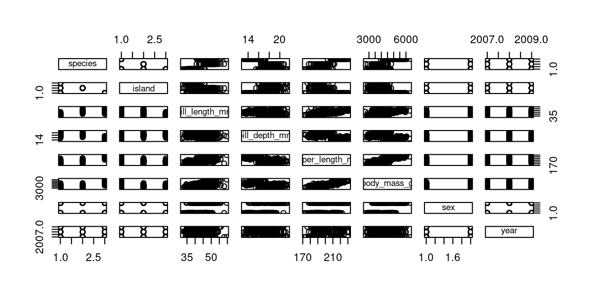
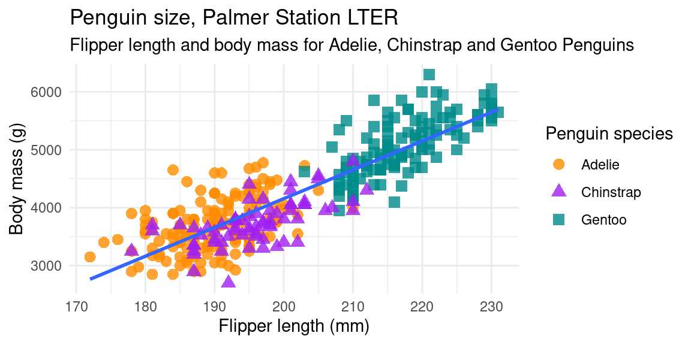
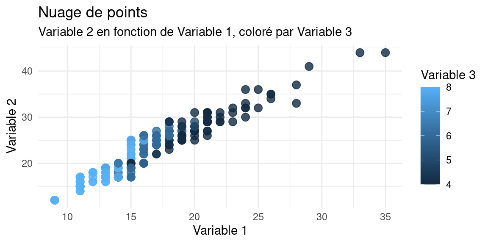
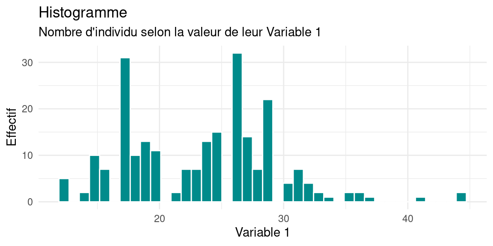
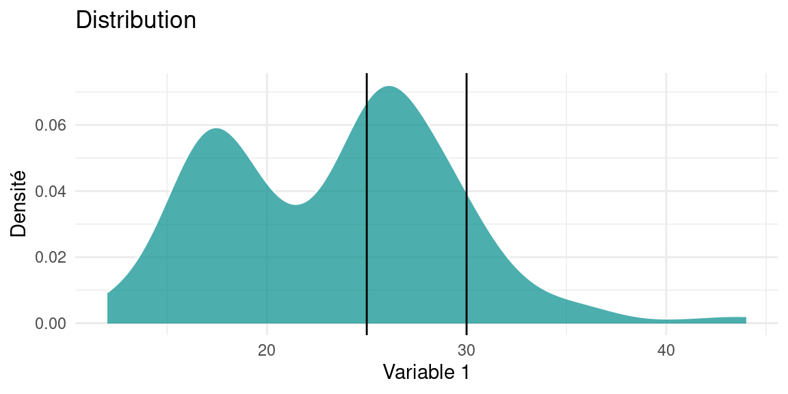
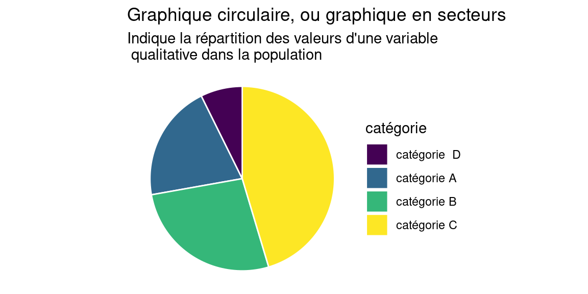

Chapitre 1 Introduction générale
Commençons par le plus important :
En présence de données, , avant tout calcul, la première chose à faire est de les visualiser.
Cette exploration visuelle permet:
- d’identifier les intervalles de valeurs des variables, ou leur modalités
- de se faire une idée de la répartition des valeurs des variables à l’intérieur de leurs intervalles
- d’identifier des valeurs aberrantes
- d’observer pour les variables spatialisées , leur répartition dans l’espace
en R, pour tracer directement tout un dataframe (=jeu de données) , on
utilise la commande plot
library(palmerpenguins) #charge un jeu de données nommé 'penguins'
plot(penguins) #affiche une matrice de graphique 
Avec un peu d’expérience, on identifie rapidement des caractéristiques utiles. par exemple ici :
- les deux premières variables sont des variables qualitatives à trois modalités
- les variables suivantes sont quantitatives, les deux dernières semblent corrélées positivement
- les deux dernières variables sont qualitatives, à deux et trois modalités
Ce cours a pour but de vous donner le vocabulaire et les outils nécessaires à préciser le sens de ces caractéristiques, et d’en chiffrer certaines propriétés.
L’analyse statistique ne se confond pas avec l’analyse spatiale, bien qu’elles soient parfois cousines. Nous allons commencer par préciser ce qu’on entend par analyse spatiale et statistique, sachant que ce support de cours se concentre sur les prémices de l’analyse statistique : l’analyse univariée (cf section 2) et l’analyse bivariée (cf. section 5)
1.1 Analyse spatiale : définition
L’analyse spatiale étudie la répartition et l’organisation d’objets localisés
L’objectif est de :
«déceler en quoi la localisation apporte un élément utile à la connaissances des objets étudiés et peut en expliquer les caractéristiques»
1.2 Analyse spatiale & Analyse Statistique
L’analyse statistique peut être vue comme l’utilisation de méthodes de calcul pour résumer et généraliser des observations. Ces observations constituent les données.
En analyse statistique :
- On suppose a priori que les unités d’analyse sont des éléments
indépendants, et on examine avec des outils statistiques, si les
variables qui les décrivent sont elles-aussi indépendantes.
- On ne s’intéresse pas à la localisation de ces unités d’observation, ni à leur interactions spatiales.
En analyse spatiale statistique, au contraire :
- Les unités d’analyse sont localisables, et donc ne sont pas toujours indépendants du point de vue spatial.
- On s’intéresse à leur propriétés y compris et surtout leur localisation et l’effet de celle-ci : on fait l’hypothèse que la localisation des unités peut influencer les valeurs des variables des unités observées.
Prenons des exemples volontairement simplistes:
En statistiques «normales», on peut examiner le lien entre revenu mensuel et la pointure d’une population: ce lien existe-t-il ? Si oui, quelle est son intensité ?
En statistiques spatiales, on peut examiner la répartition des personnes de pointure supérieur à 42 dans les zones littorales : cette répartition a-t-elle une répartition particulière ou au contraire aléatoire ? Quelles régularités peut-on observer dans cette répartition ? , etc.
1.3 Deux approches en analyse spatiale
L’analyse spatiale peut désigner deux sortes d’analyse : l’analyse géométrique et l’analyse de données spatiales.
L’ analyse géométrique se concentre sur la géométrie (i.e. la forme) des représentations numériques qui décrivent les objets du monde réel :
- analyse de forme : aire , périmètre, compacité, etc.
- analyse de réseaux : densité, centralité des nœuds, indice de Shimbel, (voir par exemple https://groupefmr.hypotheses.org/3740)
- calculs de proximité (distance euclidienne, grands cercles, distance sur réseau, isochrones)
Par extension l’analyse géométrique concerne également la création d’objets géométriques : buffers , intersections , unions, etc.
L’analyse de données (spatiales) , elle , s’attache à découvrir des relations (des groupes, des lois, des régularités) dans des données spatiales pour aider l’étude de certains phénomènes. En guise d’exemple, on pourra se référer à ce qui est peut être la toute première analyse spatiale par cartographie : l’ étude de la propagation du choléra par John Snow

Figure 1.1: Original map made by John Snow in 1854. Cholera cases are highlighted in black
Dans ce cours, nous n’aborderons ni l’une ni l’autre. Nous donnerons des bases d’analyse statistique (donc a-spatiale), dont pourra dépendre une partie de l’analyse de données spatiales
1.4 Deux familles statistiques
On peut distinguer dans les statistique les statistiques inférentielles et les statistiques descriptives .
1.4.1 Statistiques inférentielles
Les statistiques inférentielles cherchent à caractériser une population (=ensemble d’unités) à partir des caractéristiques d’un échantillon pour lequel on a recueilli des données : par des mesures, des observations, des enquêtes.
Les statistiques inférentielles cherchent à répondre de façon rigoureuse à la question suivante :
« A partir d’un échantillon , que peut-on attendre (=inférer) de la population ? »
Cette famille de statistiques emploie des modèles et des estimateurs pour réaliser des régressions, des estimations, des extrapolations, voire des prévisions.
Ce sont les statistiques qui sont utilisées lors des sondages, des recensements, mais aussi dans l’analyse de résultats expérimentaux (par exemple pour décrire l’efficacité d’un médicament). La plupart du temps quand on emploie le terme «statistiques» dans le langage courant, c’est de statistiques inférentielles qu’il s’agit.
1.4.2 Statistiques inférentielles : l’exemple des pingouins

Penguins data were collected and made available by Dr. Kristen Gorman and the Palmer Station, Antarctica LTER, a member of the Long Term Ecological Research Network. [https://github.com/allisonhorst/palmerpenguins]
Dans cet exemple, une régression linaire a été réalisée entre deux variables : la masse du corps de pingouins et la longueur de leurs nageoires. Pour autant que cette régression linaire soit de bonne qualité (cf la section dédiée dans le chapitre 5), la droite de régression, ici en bleu, est un modèle linéaire qui permet , à partir de la valeur d’une des deux variables, de déduire la valeur de l’autre, par une combinaison linéaire de type \(Variabel1 = \alpha * Variable2 + \beta\), avec \(\alpha\) et \(\beta\), deux réels.
Par exemple, si on était en présence d’un pingouin avec une règle graduée , mais sans balance, et qu’on mesurait sa nageoire à 197mm, on peut se servir de la droite de régression pour postuler que ce pingouin pèse autour de 4000g. C’est ce calcul qui est appelé parfois prédiction : le modèle linéaire, s’il est bien ajusté au nuage de points , permet de prédire la valeur de la masse du pingouin.
1.4.3 Statistiques descriptives
Les statistiques descriptives ont pour but de décrire, résumer, synthétiser les propriétés d’une population, potentiellement très nombreuse, à partir des variables qui décrivent ses individus. Ce résumé peut prendre plusieurs formes :
- Graphiques : nuages de points , histogrammes, distributions, camemberts…
- Mesures agrégées : moyenne , médiane, fréquences, caractéristiques des distributions, par exemple leur symétrie, leur aplatissement … calculées à partir des valeurs des variables
- Liaisons statistiques entre variables : corrélation, covariance, qui sont des mesures de l’intensité du lien qui peut exister entre deux variables
- Forme et structure des données, particulièrement les regroupements, détectées par classification (k-means, Random Forest, DBSCAN), ou la réduction de la dimensionalité des données (Analyse en Composantes Principale),…
Voici des exemples de graphiques habituels :

Le nuage de points est la représentation la plus courrante pour observer deux variables d’une population.

L’histogramme est utilisé pour observer la répartition des valeurs d’une variable. Il est recommandé de faire varier le nombre ou l’épaisseur des barres qui le constituent pour ne pas «manquer» des phénomènes dans la distribution de valeurs (par ex. plusieurs modalités fondues en une seule du fait d’une résolution trop grossière)

la densité d’une distribution est un autre moyen de représenter la répartition des valeurs d’une variable quantitative? Pour l’interprétation d’un tel graphique, reportez-vous à la section dédiée 2.1.1 du chapitre 2

Ce type de représentation est très populaire malgré des défauts certains (voir par exemple ; https://www.data-to-viz.com/caveat/pie.html) , il est à utiliser avec parcimonie!
Dans ce module, nous ferons majoritairement de la statistique descriptive, notamment dans le chapitre d’Analyse Univariée 2.
Dans le chapitre d’Analyse Bivariée 5, nous verrons la régression linéaire, qui, lorsque qu’elle est «utile» – c’est à dire que les deux variables présentent effectivement une dépendance suffisamment linéaire pour être bien décrite par une droite– peut être considérée comme une technique de statistique inférentielle , et utilisée pour «prédire» des valeurs, même si nous préférerons parler d’explication plutôt que de prédiction.
1.4.4 Les formats de données wide et long
Les données sont la plupart du temps tabulaires, (i.e. qu’on peut ranger dans un tableau de taille fixée) et peuvent apparaître sous deux formats :
- le format dit long, où chaque observation d’un même individu
occupe une ligne
- le format dit wide, où chaque observation d’un même individu occupe une colonne
Exemple de données au format wide:
## subject_ID sex mass measure_t1 measure_t2
## 1 1 M 7.9 12.3 10.7
## 2 2 F 6.3 10.6 11.1
## 3 3 F 9.5 13.1 13.8
## 4 4 M 11.5 13.4 12.9Exemple des mêmes données au format long
## subject_ID sex measure value
## 1 1 M pct 7.9
## 2 2 F pct 6.3
## 3 3 F pct 9.5
## 4 4 M pct 11.5
## 5 1 M measure_t1 12.3
## 6 2 F measure_t1 10.6
## 7 3 F measure_t1 13.1
## 8 4 M measure_t1 13.4
## 9 1 M measure_t2 10.7
## 10 2 F measure_t2 11.1
## 11 3 F measure_t2 13.8
## 12 4 M measure_t2 12.91.5 Vocabulaire
- Population : Ensemble d’individus. Le nombre d’individus d’une population est appelé l’effectif.
On parle aussi de “données”, “corpus”, “échantillon”, “data”, “dataset” .
- Individus : l’individu est l’unité statistique élémentaire. On parle parfois d’observations, en particuliers lorsqu’on mesure une évolution de quelque chose dans le temps.
Très souvent, les individus sont les lignes du tableau des données
- Variables : les variables sont les caractéristiques d’un individu. On obtient les valeurs des variables par des mesures, des enquêtes, des observations…
Très souvent, les variables sont les colonnes du tableau des données. On distingues deux types de variables : les variables quantitatives et les variables qualitatives
1.5.1 Variables quantitatives
Ce sont des variables qui représentent une quantité, une grandeur. Ce sont des nombres , et ils sont parfois accompagnés d’une unité. Par exemple : la taille, la masse, le revenu mensuel, la surface, les points de vie,etc.
Les variables quantitatives peuvent être continues i.e. prendre des valeurs réelles: \(var \in \mathbb{R}\) , ou discrètes i.e. prendre des valeurs entières : \(var \in \mathbb{N}\) .
1.5.2 Variables qualitatives
appelées aussi facteurs ou variables catégorielles.
Ce sont des variables dont les valeurs ne sont pas en général des nombres, mais des catégories, qu’on appelle modalités. Par exemple : la couleur des yeux , le genre, la catégorie socio-professionnelle, le type de pokemon, etc.
Une variable qualitative ne peut prendre qu’un nombre fini de modalités, qui sont définies par extension (i.e. on donne la liste des valeurs possibles) Il peut arriver qu’une variable qualitative soit codée avec des valeurs numériques, par exemple le niveau d’une alerte ou le code postal d’un département.
1.5.3 Valeur et Nature des variables
Les données étant stockées sous la forme de caractères dans des fichiers par exemple CSV, un même caractère ou suite de caractères pourra être interprété de différentes façons à la lecture de ce fichier. Ce n’est pas le cas dans d’autres systèmes comme les bases de données, où les colonnes sont typées à la création.
Ainsi la valeur «trois» peut être exprimée dans des variables de nature différentes. Cela peut-être :
- la valeur numérique ‘3’ , d’une variable quantitative, par exemple une hauteur en mètres.
- la valeur caractère ‘3’, d’une variable qualitative, par exemple l’arrondissement de paris où se trouve une adresse.
Un logiciel ne peut pas trancher seul entre ces deux alternatives, on
doit lui indiquer la nature des variables, en l’occurence pour un
logiciel de statistiques , indiquer si la variable est quantitative (de
type numeric ou integer en R) ou qualitative (de type character ou
factor en R).
Également, les valeurs manquantes d’un dataset sont parfois exprimées
avec les caractères NA (qui signifie “non attribué”), parfois avec
NULL , parfois avec rien.
Il revient à la personne qui traite les données d’identifier ces valeurs manquantes et de les traiter de façon adéquate.
1.5.4 Types de variables et représentations
La représentation des données doit être adaptées au type de variables. La table suivante indique les choix de représentations conventionnels.
| Type | Échelle/Axes |
|---|---|
| quantitative continue | continue |
| quantitative discrète | discrète |
| qualitative/modale non ordonnée | discrète |
| qualitative/modale ordonnée | discrète |
| dates | continue ou discrète |
| texte | aucune ou discrète |
tiré de Fundamentals of Data Visualization Claus O. Wilke [https://serialmentor.com/dataviz/]
1.6 Difficultés de la statistique
Nous donnons ci-dessous quelques exemples de difficultés inhérentes à l’analyse statistique.
1.6.1 Plusieurs discours sont possibles
Les statistiques sont délicates parce qu’un.e statisticien.ne ne peut pas se limiter à des calculs et à la représentation graphique de ses données, mais doit également les décrire et les interpréter.
Cette interprétation est elle-même difficile car des discours différents peuvent être produits sur la base de chiffres identiques.
Considérons cet exemple, tiré du cours d’Ana-Maria Olteanu-Raimond :
Voici les chiffres du bilan d’une entreprise en 2013 et 2014
| Ouvriers | Cadres | |
|---|---|---|
| 2013 | effectif : 500 | effectif : 100 |
| salaire : 1300 | salaire :2200 | |
| 2014 | effectif : 200 | effectif : 400 |
| salaire :1170 | salaire : 1980 |
- Mme. AAA : «tous les salaires ont baissé de 10%»
- Mme. BBB : «le salaire moyen a augmenté d’environ 18%»
Ces deux phrases sont justes, et il n’y a pas lieu d’en choisir une plus que l’autre. Un.e analyste consciencieux.se se devrait de mentionner les deux à la fois .
1.6.2 Taille et représentativité de l’échantillon
Les données ne sont jamais exhaustives: elles sont le résultats de mesures, d’enquête et ne captent qu’une partie, un échantillon de l’ensemble des objets qu’elles décrivent.
La taille et la représentativité de cet échantillon sont critiques, et il est évident qu’on ne dit pas les mêmes choses à partir d’un petit échantillon partial qu’à partir d’un vaste échantillon représentatif.
Quand on en a la possibilité, il faut toujours privilégier les données les plus nombreuses et les plus représentatives du phénomène étudié.
1.6.2.1 Exemple de l’effet de la taille
Prenons un exemple avec des données “réelles” , on va calculer la hauteur moyenne des arbres de paris , dont le jeu de données est disponible ici
Après filtrage des données pour ne considérer que les arbres entre 1 et 40 mètres de hauteur, on va calculer la hauteur moyennes des arbres du dataset:
library(geojsonsf)
library(sf)
arbres <- geojson_sf("./data/les-arbres.geojson")
arbres <- filter(arbres, hauteurenm < 40 & hauteurenm > 1 )
mean(arbres$hauteurenm)## [1] 10.28588On va maintenant opérer une selection sur les données et ne considérer
que les arbres étiquettés comme “jeunes” (variable
statdedeveloppement), et calculer leur hauteur moyenne :
## [1] 5.691254Évidemment , la hauteur moyenne des jeunes arbres n’est pas la même que la hauteur moyenne des arbres en général!
Observons maintenant l’effet que peut avoir la taille de l’échantillon sur un calcul de moyenne :
On va prendre des échantillons du dataset des arbres de Paris de plus en plus petits (on divise par deux la taille de l’échantillons à chaque fois) et on va observer la variation de la hauteur moyenne des arbres en fonction de la taille de l’échantillon sur lequel on calcule.
Pour chaque taille d’échantillon, on réalise plusieurs tirages (50) et on observe la dispersion des valeurs moyennes de la hauteur en mètres sur 50 tirages , pour montrer la variabilité de la valeur moyenne
A titre indicatif, voici un moyen de coder simplement cette expérience en R :
nb_samples <- nrow(arbres)
samples <- c()
while(nb_samples > 1){
nb_samples <- floor(nb_samples/2)
samples <- c(samples, nb_samples) # concaténation des listes
}
# fonction qui tire un échantillon d'une certaine taille dans une liste
myfunction<- function(taille,data){
return(sample(data,taille,replace = F))
}
# tirage simple
samples_hauteur <- sapply(samples, myfunction, arbres$hauteurenm)
valeurs_moyennes <- sapply(samples_hauteur, mean)
names(valeurs_moyennes) <- samples %>% as.character()
#on répète 50 fois le tirage
spls_sizes <- rep(samples, 50)
spl_h <- sapply(spls_sizes, myfunction, arbres$hauteurenm )
spl_moy <- sapply(spl_h, mean)
# constitution du dataframe
dfhmoy <- data.frame(spl_moy, spls_sizes)
dfhmoy$spls_sizes <- factor(dfhmoy$spls_sizes, levels=samples)
names(dfhmoy) <- c("h_moy", "spl_size")
#graphique
ggplot(dfhmoy ,aes(h_moy, spl_size))+
geom_boxplot()+
coord_flip()+
theme(axis.text.x = element_text(angle = 90, vjust = 0.5, hjust=1))+
labs(x="hauteur moyenne en mètre",
y="taille de l'échantillon",
title="Sensibilité de la moyenne à la taille de l'échantillon",
subtitle = "On tire 50 échantillons de chaque taille.")
Ce graphique présente sous la forme d’un boxplot (ou boîte à moustaches), la distribution de la valeur des moyennes des hauteurs, calculées sur des échantillons dont la taille varie de 84508 individus, soit la moitié du dataset des arbres filtrés, à 1 individu. Le boxplot montre l’étendue de la variation d’une variable quantitative
Pour chaque taille d’échantillon, on réalise 50 tirages pour éviter les “coups de chance”, et on calcule la moyenne de chaque échantillon. On a donc calculé 50 valeurs de moyenne , pour chaque taille d’échantillon.
Plus la boîte à moustache est grande (étirée), plus les valeurs de la variable qu’elle représente sont variées. Le trait noir au milieu représente la médiane des valeurs.
Sur notre graphique, on constate que la médiane des moyennes est très stable et est toujours proche de 10, mais que les tailles des boxplots sont très petites pour les échantillons de grande taille(indiquant que la moyenne des hauteurs varie peu), et qu’au contraire , pour des tailles d’échantillons faibles (moins de 100 individus), la moyenne des hauteurs varie plus fortement.
Nous aborderons l’interprétation des boxplots dans le chapitre 2 de façon plus précise.
Sur notre graphique, on constate que la médiane des moyenne est très stable et est toujours proche de 10, mais que les tailles des boxplot sont très petites pour les grandes tailles d’échantillons (indiquant que la moyenne des hauteurs varie peu), et qu’au contraire , pour des tailles d’échantillons faibles (moins de 100 individus), la moyenne des hauteurs varie plus fortement.
Pour finir de se convaincre de ces variations, voici la représentation alternative des valeurs moyennes en fonction de la taille des échantillons sous la forme d’un nuage de point:
ggplot(dfhmoy ,aes(h_moy, spl_size))+
geom_point(col="orange", size=0.5)+
coord_flip()+
theme(axis.text.x = element_text(angle = 90, vjust = 0.5, hjust=1))+
labs(x="hauteur moyenne en mètre",
y="taille de l'échantillon",
title="Hauteur moyenne en fonction de la taille d'échantillon",
subtitle = "On tire 50 échantillons de chaque taille.")
1.6.3 Le paradoxe de Simpsons
Le paradoxe de Simpsons apparaît lorsqu’une population est structurée en groupes et que deux hypothèses contradictoires peuvent être formulées, suivant qu’on prenne en compte les appartenances des individus à ces groupes ou non.

source: wikipedia
Par exemple, le nuage de points animé ci-dessus, illustre comment on peut formuler deux hypothèses contradictoire concernant la même population :
- \(H_A\) : la variable \(x\) est corrélée linéairement et négativement avec la variable \(y\)
- \(H_B\) : la variable \(x\) est corrélée linéairement positivement avec la variable \(y\)
\(H_A\) est valable si l’on considère les valeurs de la population dans son ensemble et sans tenir compte des groupes qui la structurent.
À l’intérieur de chaque groupe, \(H_B\) est valable et contredit \(H_A\).
1.6.4 Échelle individuelle vs. Échelle agrégée
Lorsqu’on manipule des données spatiales, le territoire sur lequel les données sont disponibles peut être découpé de plusieurs façons. Souvent, ces découpages sont imbriqués : la maille d’un niveau \(n\) est partionnée en plusieurs mailles au niveau \(n-1\). Par exemple, la France se découpe en régions, elles-mêmes décomposées en départements, eux-mêmes décomposés en commune.
Par exemple, la France se découpe en régions, elles-mêmes décomposées en départements, eux-mêmes décomposés en commune.
Un jeu de données spatial est défini à un certain niveau de découpage spatial. Par exemple, on peut disposer du revenu mensuel moyen des foyers par commune, mais on ne dispose pas des données “brutes” qui y ont conduit: les revenus des personnes qui composent les foyer des communes.
La difficulté est qu’un jeu de données spatial est défini et disponible
à un certain niveau de découpage spatial, et que considérer ces mêmes
données à un niveau de découpage plus fin ou plus grossier nécessite une
transformation : l’agrégation ou la désagrégation.
L’agrégation est relativement directe , la désagrégation l’est beaucoup
moins.
Par exemple, on peut disposer du revenu mensuel moyen des foyers par commune, mais on ne dispose pas des données “brutes” qui y ont conduit: les revenus des personnes qui composent les foyer des communes. Si on désire considérer la même variable à un niveau de découpage plus grossier (ici, les régions) ou plus fin (ici, les communes), on devra agréger ou désagréger les données.
L’agrégation est relativement directe , la désagrégation l’est beaucoup moins
1.6.5 Agrégation
On parle d’agrégation lorsqu’on désirer regrouper des données disponibles à un niveau de découpage donné Inférer des caractéristiques concernant les unités agrégées d’après les caractéristiques individuelles
En fonction des données manipulées, l’agrégation peut se faire par la somme (par exemple pour des stocks) la moyenne (par exemple pour des ratios), ou tout autre combinaison bien choisie.
1.6.6 Désagrégation ou Ventilation
On parle de désagrégation ou de ventilation de données lorsqu’à partir de données disponibles à un niveau de découpage donné, on cherche à simuler une répartition de données à un niveau de découpage plus fin, tout en restant cohérent avec la répartition des données au niveau de découpage originel.
Solution triviale donc sans intérêt:
Pour une variable de stock \(V_s\) (on dit aussi variable d’effectif) , i.e. mesurant une quantité d’objets, et en l’absence de toute autre données ou contraintes, on peut affecter aux \(n\) communes du département un nombre constant valant \(\frac{V_s}{n}\).
Pour une variable de ratio \(V_r\), on peut affecter le même ratio \(V_r\) à toutes les mailles qui composent la maille à désagréger.
Si on écarte la solution triviale, la désagrégation de données est une opération complexe, pour lesquels il existe cependant plusieurs méthodes de génération de population synthétique respectant certaines contraintes, comme l’Iterative Proportional Fitting
Les choses se compliquent encore si les découpages ne sont pas imbriqués les uns dans les autres. Généralement, on agrège les valeurs par des sommes pondérées par la surface des entités spatiales concernées. Un bon aperçu des méthodes d’allocation spatiale est donné dans ce document
1.7 À quelle échelle observer ? le MAUP
Puisqu’une même zone peut être découpée de différentes façons, avec des mailles de taille variable, susceptibles d’évoluer dans le temps (par exemple les limites adminsitratives des communes en France), toute question d’analyse spatiale (et donc d’analyse spatiale statistique) comporte une question spécifique à l’échelle d’observation : À quelle échelle observer nos données ?
Cette question peut se décomposer en deux sous-questions, liées :
- quel maillage utiliser ? Par exemple: une maille régulière carrée ou
hexagonale, les contours adminsitratifs, les mailles
IRIS ?
- quelle taille de maille choisir ?
Il est très difficile de répondre à ces questions dans l’absolu, c’est même un problème «insoluble» appelé le MAUP (Modifiable Areal Unit Problem).
Les raisons de cette impossibilité de déterminer le découpage idéal pour observer une donnée spatialisée sont nombreuses. En voici quelques unes, qui je pense sont les principales:
- La plupart des phénomènes d’intérêts sont multi-scalaires, c’est-à-dire qu’ils peuvent se produire et/ou s’observer à plusieurs niveaux d’échelle.
- L’agrégation peut faire disparaitre certains détails, certaines spécificités dans la cartographie des données.
- Des effets de la géométrie du découpage (appelés effets de zonage) modifie la représentation cartographique des données
Voici quelques exemples qui montrent ces difficultés.
1.7.1 Effet de zonage
Cette image tirée de la page wikipedia gerrymanding, illustre bien comment un découpage d’une même zone peut amener à des résultats de vote différents.

(#fig:img_gerryManding)Différentes manières de découper des circonscriptions électorales.
1.7.2 MAUP : exemples
Ces exemples sont tirés du rapport ESPON :
https://www.espon.eu/sites/default/files/attachments/espon343_maup_final_version2_nov_2006.pdf

Vous pouvez noter comme les zones du Sud en découpage NUTS 2 , sont représentées uniformément rose (valeur max du GDP/hab) alors qu’avec un découpage plus fin (NUTS 3), la situation du sud est loin d’être aussi uniforme : on note par exemple que la moitié Est des mailles du Sud-Est a des teintes plus mélangées dans le découpage NUTS3, avec un mélanges de mailles jaunes et bleues, que dans le découpage NUTS2 .
De même, les zones frontalières du Luxembourg et de la Belgique apparaissent plus pauvres (teintes jaunes et bleues) dans le découpage NUTS 3 que dans le découpage NUTS2.
De manière générale : l’agrégation va “lisser” les aspérités des données, certains contrastes ne «survivent pas» à l’agrégation spatiale.

Dans ce deuxième exemple, on voit la forme et la taille des mailles changer.
Là aussi, un effet de lissage, indissociable de l’agrégation, fait apparaitre certaines régions comme uniformes et cachent certains singularités: par exemple le fait que les zones les plus lointaines du littoral sont pauvres (teintes oranges à l’arrière du pays, Nord et Nord-Ouest) dans le découpage en mailles carrées de 30km n’apparait pas dans le découpage administratif(les deux vignettes de gauche), tout en longueur.
1.8 Rappel: La première “chose à faire”
Représenter/Tracer/Cartographier les variables de la population.
Cette exploration visuelle permet:
- d’identifier les intervalles de valeurs des variables, ou leur modalités
- de se faire une idée de la répartition des valeurs des variables à l’intérieur de leurs intervalles
- d’identifier des valeurs aberrantes
- d’observer pour les variables spatialisées , leur répartition dans l’espace
D’autre part, comme le montre l’exemple ci-dessous, les valeurs de statistiques peuvent être trompeuses, et discriminent beaucoup moins bien des situations qualitativement très différentes que notre œil :

Les valeurs chiffrées affichées sont la moyenne, l’écart-type et la corrélation des deux séries qui forment le nuage de points. Le chapitre suivant introduira ces notions.